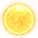
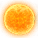

Planet modding
Version
This article is for the PC version of Stellaris only.
This guide is for adding and modifying Celestial bodies to the game. For guidelines on how to use them in solar systems, including adding modifiers and inhabitants, see System modding.
Overview
Planet and star classes can be found in common/planet_classes. Note that "stars" and "star classes" are two different things: individual stars are considered the same as planets in the game code, while star classes (found in common/star_classes) refer to the classification of a solar system as a whole and will determine lighting, the system's icon in the galaxy map, and number of individual stars in a solar system. Information about modding star classes can be found here.
Creating a new planet class is easy: one simply chooses an internal name (ex: "pc_volcanic") and defines how the planet will work in the context of the game. Is it a colonizable world? A star? An inhabitable megastructure? Etc. The internal name doesn't need to reflect the planet's "real" name; using localisation, the name visible to players can be whatever you want it to be.
Planet variables
| Variable Name | Default Value | Description |
|---|---|---|
| @planet_standard_scale | 11 | Ambiguous, determines visual size of planet? |
| @habitable_planet_max_size | 25 | Maximum tile count for planets |
| @habitable_planet_min_size | 12 | Minimum tile count for planets |
| @habitable_moon_max_size | 15 | Maximum tile count for moons |
| @habitable_moon_min_size | 10 | Minimum tile count for moons |
| @habitable_min_distance | 60 | Minimum altitude above body (orbit height) |
| @habitable_max_distance | 100 | Maximum altitude above body (orbit height) |
| @habitable_spawn_odds | 0.5 | Rational spawn chances (n/1?) |
Planet rules
The following is a list of the different rules you can apply to a planet. The planet will not randomly spawn if these rules are not met, though they can sometimes be bypassed through system modding.
| Rule Name | Description | Notes |
|---|---|---|
| asteroid | Is this an asteroid. | Defaults to no. |
| atmosphere_color | The color of your planet's atmosphere. | In the form hsv { 0.0 0.5 1.0 }; numbers must be between 0.0 and 1.0. |
| atmosphere_intensity | The saturation of your planet's atmosphere. | Between 0.0 and 1.0. |
| atmosphere_width | The thickness of your planet's atmosphere. | Between 0.0 and 1.0. |
| can_be_moon | If no, this planet class will never be used for moons orbiting planets. | Defaults to yes. |
| carry_cap_per_free_district | Additional carrying capacity per free district slots. | Example: carry_cap_per_free_district: 4 |
| chance_of_ring | The probability that this planet will spawn with a ring system. | Between 0.0 and 1.0. |
| city_color_lut | A transparent filter that is applied to cities (if habitable) to make it better blend with the background. | Must specify the location of the filter. Only necessary on habitable worlds with visible cities. |
| climate | The planet's climate type. | Either "dry", "wet", "cold", a modded climate, or none specified. |
| colonizable | Can this planet be colonized or otherwise inhabited, by players and the AI? | |
| colonization_tech | Technology required to colonize. | Defaults to empty. Planet class will still show as colonizable without the tech, and say what tech is required. |
| default_planet_selection | Defaults to no. | |
| district_set | String, for use in the uses_district_set trigger for easy compatibility. | |
| enable_tilt | If no, disables planet tilt for this planet class. | Defaults to yes. Planet tilt is defined in defines. |
| entity | The planet entities your planet will use by default. | You can create a custom set of entities (such as "volcanic_planet") or use an existing one (such as "arctic_planet"). |
| entity_face_object | If no, disables rotation to face what it orbits. | Defaults to yes. |
| entity_scale | The size of this planet model compared to others. | @planet_standard_scale by default. |
| extra_orbit_size | If higher than 0, will increase the size of the planet's orbit. | Gas giants are the only "normal" planet with a value higher than 0 at present. |
| extra_planet_count | If higher than 0, will increase the number of planets this planet counts as. | Gas giants are the only "normal" planet with a value higher than 0 at present. |
| fixed_city_level | Permanently applies a fixed amount of infrastructure to this planet's backdrop. | Example: fixed_city_level = 6 |
| fixed_entity_scale | If yes, this planet's visible size will always be the same regardless of its actual size. | Defaults to no. |
| habitat | Is this a habitat? | Defaults to no. |
| has_colonization_influence_cost | If yes, players/AI will have to spend |
Appears to be an obsolete feature as of Patch 2.0. |
| icon | The icon your planet uses. | See Planet icons below. |
| ideal | If yes, this planet will always be 100% habitable to all species. | Defaults to no. |
| initial | Can this planet be used to spawn for custom species? | Defaults to no. |
| is_artificial_planet | Will make sure that modifiers for non artificial planets are not added, e.g. max districts. | Defaults to no. |
| max_distance_from_sun | The maximum orbital distance at which this planet can randomly spawn. | Probably the distance from the center of the system, not the sun itself. How this works in binary or trinary systems is still unclear. |
| min_distance_from_sun | The minimum orbital distance at which this planet can randomly spawn. | Probably the distance from the center of the system, not the sun itself. How this works in binary or trinary systems is still unclear. |
| modifier | Applies a permanent modifier to this planet, adjusting resource production, pop growth speed, etc. | modifier = { <effect > } |
| moon_size | The range of sizes that this planet will use if it is a moon. | moon_size = { min = <value> max = <value> } |
| orbit_lines | If no, disabled orbit lines for this planet class. | Defaults to yes. |
| picture | Applies an existing planet's backdrop instead of a custom one. | Example: picture = pc_gaia. |
| place_entity_on_planet_plane | If no, will be put above the plane planets are in in the solar system. | Defaults to yes. |
| planet_size | The range of sizes that this planet will use if it is not a moon. | planet_size = { min = <value> max = <value> } |
| preview_entity | ||
| production_spawn_chance | ? ? ? | Between 0.0 and 1.0. |
| ringworld | Is this planet a ringworld? | Defaults to no. |
| show_city | If no, any cities on this planet will not be visible in the backdrop. | Defaults to yes. |
| space_monster_target | Country types with space monster AI will wander to this planet type if set to yes. | |
| spawn_odds | The likelihood that this planet will randomly spawn if all conditions are met. | |
| star | Is this planet class a star? | Defaults to no. |
| star_gfx | Does this star glow brightly? | Defaults to yes if it is a star. |
| starting_planet | Can players/AI start on this planet class? | |
| survey_time_factor | Multiplier on survey time. | Defaults to 1. |
| tile_set | Determines the appearance of this planet's tiles. | Only necessary if using tiles that don't match your planet class's name (ex: using "pc_gaia" for a planet called "pc_volcanic"). |
| uses_alternative_skies_for_moons | If yes, when it spawns as a moon, it will show a planet in the backdrop, with a ring as appropriate. | |
| uses_alternative_skies_if_has_orbital_ring | If yes, when it has an orbital ring, it will show it in the backdrop. | Defaults to no. |
Examples
A desert world:
pc_desert = {
entity = "desert_planet"
icon = GFX_planet_type_desert
climate = "dry"
initial = yes
entity_scale = @planet_standard_scale
atmosphere_color = hsv { 0.50 0.2 0.8 } #DONE
atmosphere_intensity = 1.0
atmosphere_width = 0.5
min_distance_from_sun = @habitable_min_distance
max_distance_from_sun = @habitable_max_distance
spawn_odds = @habitable_spawn_odds
city_color_lut = "gfx/portraits/misc/colorcorrection_desert.dds"
extra_orbit_size = 0
extra_planet_count = 0
chance_of_ring = 0.2
planet_size = { min = @habitable_planet_min_size max = @habitable_planet_max_size }
moon_size = { min = @habitable_moon_min_size max = @habitable_moon_max_size }
production_spawn_chance = 0.4
colonizable = yes
district_set = standard
uses_alternative_skies_for_moons = no
carry_cap_per_free_district = @carry_cap_normal
}
A toxic world:
pc_toxic = {
entity = "toxic_planet"
entity_scale = @planet_standard_scale
icon = GFX_planet_type_toxic
atmosphere_color = hsv { 0.19 0.45 0.9 } #DONE
atmosphere_intensity = 0.1
atmosphere_width = 1.2
min_distance_from_sun = 60
max_distance_from_sun = 110
spawn_odds = 10
extra_orbit_size = 0
extra_planet_count = 0
chance_of_ring = 0.2
planet_size = { min = 12 max = 25 }
moon_size = { min = 6 max = 10 }
colonizable = no
show_city = no
}
A habitable ringworld section:
pc_ringworld_habitable = {
ringworld = yes
entity = "ringworld_habitable_entity"
preview_entity = "ringworld_01_damaged_full_entity"
picture = pc_ringworld
icon = GFX_planet_type_ringworld
entity_scale = 1.0
enable_tilt = no
fixed_entity_scale = yes
atmosphere_color = hsv { 0.0 0.0 1.0 } #DONE
atmosphere_intensity = 1.0
atmosphere_width = 0.5
show_city = yes
city_color_lut = "gfx/portraits/misc/colorcorrection_continental.dds"
extra_orbit_size = 0
extra_planet_count = 0
chance_of_ring = 0.0
planet_size = 10
moon_size = 1
colonizable = yes
district_set = ring_world
ideal = yes
starting_planet = no
orbit_lines = no
has_colonization_influence_cost = no # applies when within own borders
is_artificial_planet = yes
modifier = {
planet_max_buildings_add = 12
}
carry_cap_per_free_district = @carry_cap_normal
}
A class-F star:
pc_f_star = {
entity = "f_star_class_star_entity"
entity_scale = 20.0
picture = "pc_f_star"
icon = GFX_planet_type_f_g_star
atmosphere_color = hsv { 0.6 0.3 0.6 }
atmosphere_intensity = 1.0
atmosphere_width = 0.5
star = yes
min_distance_from_sun = 0
max_distance_from_sun = 0
spawn_odds = 0
extra_orbit_size = 0
extra_planet_count = 0
chance_of_ring = 0
planet_size = { min = 20 max = 35 }
colonizable = no
}
Planet icons
Planet icons can be found in gfx/interface/icons/planet_type_icons.dds, and their sprites are documented in interface/planet.gfx. For reference, here is a list of which values to use for which icon:
| Icon | # |
|---|---|
| GFX_planet_type_desert | |
| GFX_planet_type_arid | |
| GFX_planet_type_tundra | |
| GFX_planet_type_continental | |
| GFX_planet_type_tropical | |
| GFX_planet_type_ocean | |
| GFX_planet_type_arctic | |
| GFX_planet_type_gaia | |
| GFX_planet_type_barren_cold | |
| GFX_planet_type_barren |
| Icon | # |
|---|---|
| GFX_planet_type_toxic | |
| GFX_planet_type_molten | |
| GFX_planet_type_frozen | |
| GFX_planet_type_gas_giant | |
| GFX_planet_type_machine | |
| GFX_planet_type_hive | |
| GFX_planet_type_nuked | |
| GFX_planet_type_asteroid | |
| GFX_planet_type_alpine | |
| GFX_planet_type_savannah |
| Icon | # |
|---|---|
| GFX_planet_type_ringworld | |
| GFX_planet_type_habitat | |
| GFX_planet_type_shrouded | |
| GFX_planet_type_city | |
| GFX_planet_type_m_star | |
 |
GFX_planet_type_f_g_star |
 |
GFX_planet_type_k_star |
| GFX_planet_type_a_b_star | |
| GFX_planet_type_pulsar | |
| GFX_planet_type_neutron_star | |
| GFX_planet_type_black_hole |
{kind=link}
{kind=link}
{kind=link}
{kind=link}
{kind=link}
{kind=link}
Terraforming
Terraforming is defined separately from planets in files found in common/terraform. These are relatively straightforward definitions, but do need to be defined for each individual link between two planet types. That means, for example, if a modder wishes to add a new planet type that can be terraformed into anything and have anything terraformed into it they will have to define two links for each existing planet type, one to transform a given type into the new one, and one to transform the new one into each existing type. A basic example of a terraforming link definition can be seen below:
terraform_link = {
from = "pc_continental"
to = "pc_tropical"
energy = 2000
duration = 1800
condition = {
has_technology = "tech_terrestrial_sculpting"
}
ai_weight = {
weight = 0
}
}
Each link definition starts with the header terraform_link and then is followed by arguments determining the starting and ending planet classes for the terraforming operation. After that it is followed by the cost of the terraforming operation as well as how long the operation will take to complete. Afterwards the link has a condition block. This is used to determine what requirements are needed before a terraforming operation can be performed, and is used to lock certain transformations behind technology or ascension perks. Lastly a terraforming link definition includes an ai_weight entry, which is used to determine whether or not an AI will perform a terraforming.
If desired there are some slightly modifications that can be performed on the basic format. One is to use a potential block. When used this will cause the terraforming option to only appear if the listed requirements are met. For example, this terraforming link definition
terraform_link = {
from = "pc_barren_cold"
to = "pc_arctic"
energy = 5000
duration = 3600
potential = {
from = { has_modifier = terraforming_candidate }
}
condition = {
has_technology = "tech_climate_restoration"
}
effect = {
from = { remove_modifier = terraforming_candidate }
}
ai_weight = {
weight = 5
}
}
Will only show up in the menu if the pc_barren_cold planet also has the terraforming_candidate modifier, and will not be available otherwise.
A final note is that terraform_link's also support effect blocks as well. These are operations that are performed immediately upon completion of the terraforming operation. For example, adding this block:
effect = {
from = { remove_modifier = terraforming_candidate }
}
Will cause the "terraforming_candidate" modifier to be removed from the terraformed planet upon completion.
| Empire | Empire • Ethics • Governments • Civics • Origins • Mandates • Agendas • Traditions • Ascension perks • Edicts • Policies • Relics • Technologies • Custom empires |
| Pops | Jobs • Factions |
| Leaders | Leaders • Leader traits |
| Species | Species • Species traits |
| Planets | Planets • Planetary feature • Orbital deposit • Buildings • Districts • Planetary decisions |
| Systems | Systems • Starbases • Megastructures • Bypasses • Map |
| Fleets | Fleets • Ships • Components |
| Land warfare | Armies • Bombardment stance |
| Diplomacy | Diplomacy • Federations • Galactic community • Opinion modifiers • Casus Belli • War goals |
| Events | Events • Anomalies • Special projects • Archaeological sites |
| Gameplay | Gameplay • Defines • Resources • Economy • Game start |
| Dynamic modding | Dynamic modding • Effects • Conditions • Scopes • Modifiers • Variables • AI • On actions |
| Media/localisation | Maya exporter • Fonts • Portraits • Flags • Event pictures • Interface • Icons • Music • Localisation |
| Other | Console commands • Save-game editing • Steam Workshop • Modding tutorial |